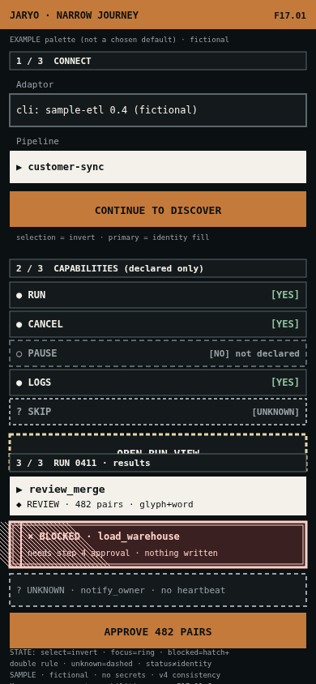
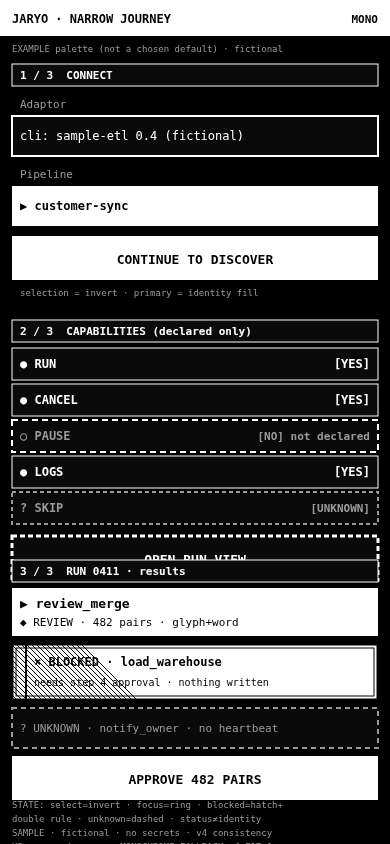
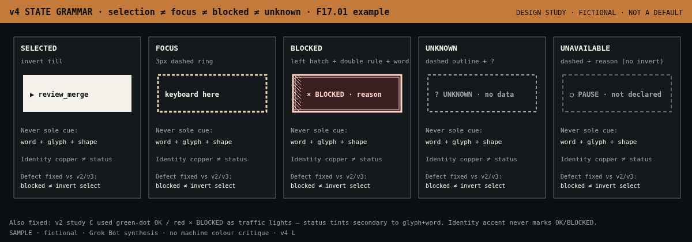
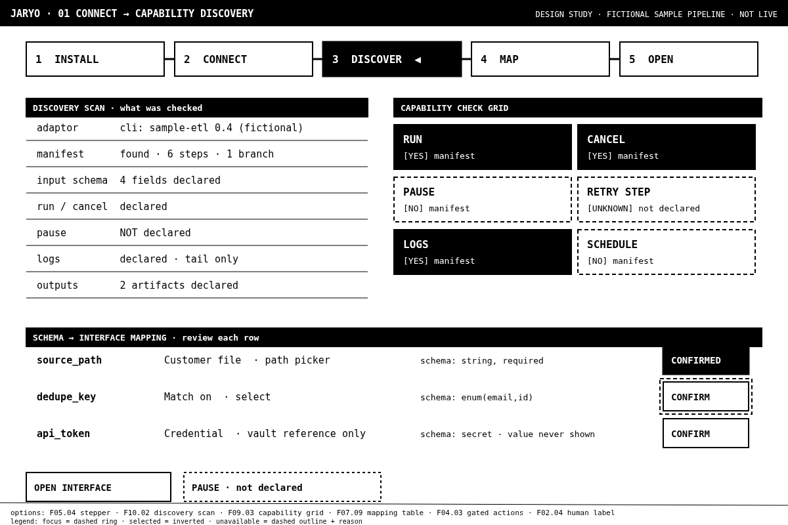
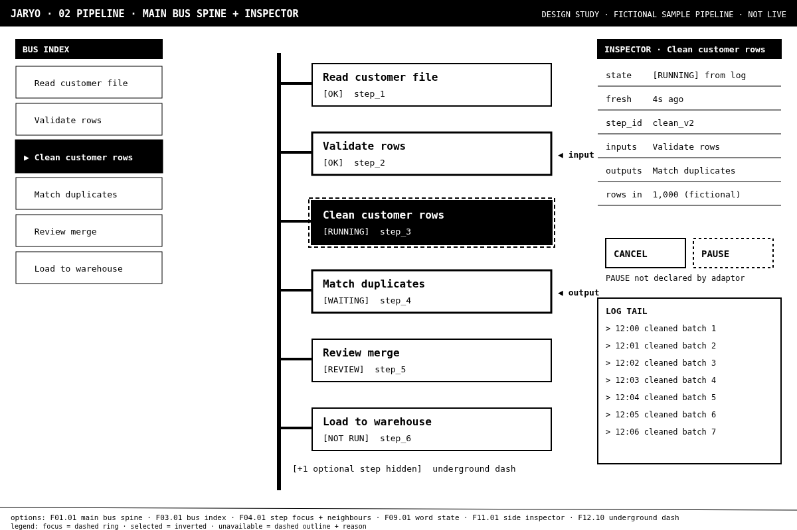
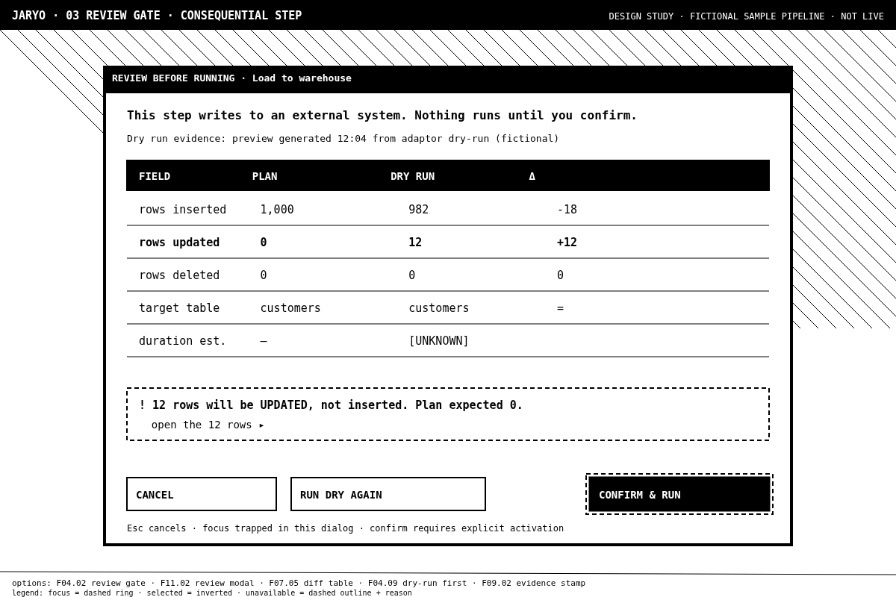

Family
Option radio group: arrow keys move the selection, Home and End jump to the first and last option, Space selects the focused option. Tab moves on to the Expand buttons.
Composed reference journeys
Reference studies (existing assets)
v4 narrow copper EXAMPLE

v4 narrow mono fallback

v4 state grammar

Pilot connect

Pilot pipeline

Pilot review / recovery

Selection summary
| ID | Family | Choice | Name |
|---|